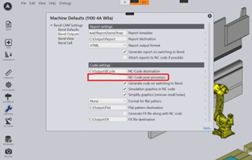
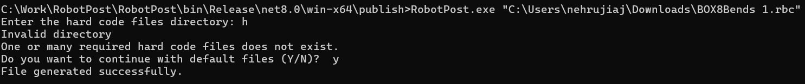
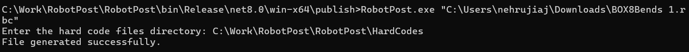
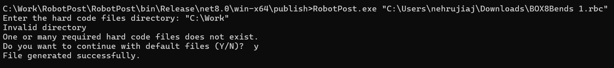
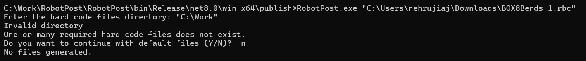
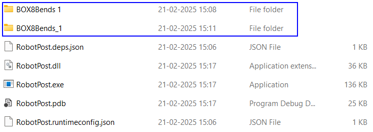
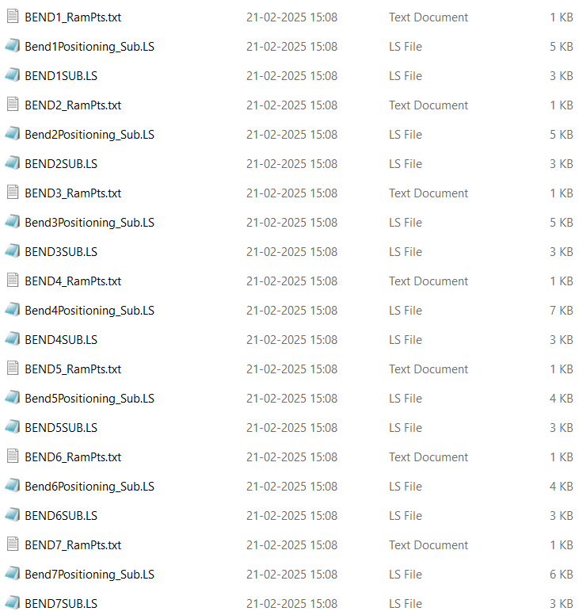

Post Processor
installation and usage
The files could be found in \03_Matlab_Ccode\C_Postporcessor\executalbe
Overview
This document provides a detailed guide to the workflow and implementation of the post processor. The purpose of the post processor is to generate robot specific files (.LS). The output includes structured files exported into a designated folder for seamless integration with the machine setup.
Pre-Requisites:
An exe and a folder containing hardcode (PLC) files are provided to the user.
Before running the post processor, ensure the following steps are to be completed:
-
Provide the Location of the Post Processor in Flux
-
Navigate to:
-
Settings ⇒ Machine Defaults ⇒ Bend Outputs ⇒ Specify the Post ⇒ Processor Location in NC-Code post-processor
-
-

-
Stand-alone running of the exe
-
Navigate to the location of the exe and open the command prompt
-
Provide the exe and path of the rbc file inside double qoutes to run the post processor.
-

Workflow
1. Input File Acquisition
-
Gets the .rbc file directly from Flux and processes it. This file contains critical information about ram points, robot positions, and other necessary data.
2. File Parsing
-
When processing an RBC file, the following key details are extracted:
-
Number of Bends - Identifies the total count of bends present in the RBC file.
-
Regrip Status - Determines whether a bend operation requires a regrip.
-
Clamp Regrip Presence - Checks if clamp regrip is required for the bending operation.
-
Motion Points and their Reference Names - Extracts all motion points and their reference names for easy identification.
-
Motion Type - Classifies each motion as either:
-
Joint Motion: The robot moves all joints in a coordinated manner.
-
Linear Motion: The robot moves in a straight-line path between two points.
-
-
-
The extracted points are categorized into three distinct groups:
-
Main LS - These are the primary positioning points and data for the robot in the process.
-
Bend LS - Points and data specifically associated with the bending operations.
-
Ram Points - Points related to ram movements within the bending cycle.
-
3. Hard-Coded Templates
-
The post processor uses a set of pre-defined hard-coded (PLC) files which are embedded in the solution or can be fed from external source for generating LS files.
-
PLC hardcoded files contain predefined lines with placeholders in the format [PointName]. These placeholders indicate where specific motion points should be collected and written into the file.
-
These hardcode files are kept outside and editable for user convenience. Location of the external files should be specified without double quotes to use it.

-
If external files are not found or the path is invalid, a prompt is displayed asking whether to use the default files. If the user presses 'Y', the default files are used; if 'N' is pressed, a message stating "No files generated" is displayed and the program exits.


4. File Generation
-
The hardcode files are read line by line and written into the output file.
-
If the line read contains placeholders for points, the corresponding line is replaced with the corresponding motion points.
-
New points added in Flux can be directly incorporated inside the post-processor without being added in the hardcoded (PLC) files manually. Each point has a Boolean flag ensuring that the preceding point is written, allowing seamless integration of newly added points.
-
The following files are generated:
-
Main File: Contains the primary instructions for the robot which calls the bend positioning files for each bend.
-
Bend Sub and Bend Positioning Files: Generated for each bend to specify detailed instructions. The bend positioning file of each bend calls their respective BendSub files.
-
Ram Points File: Provides a comprehensive list of ram positions for each bend to be provided to RA.
-
-
The Main file, Bend Sub and Bend Positioning files are generated as .LS files. Ram Positioning files are generated as .txt files.
5. File Export
-
• All the generated files are saved into a designated folder having the same name as the part and is saved in the location of the exe.


Note: Implementation of FTP for files transfer through the post processor is yet to be implemented.